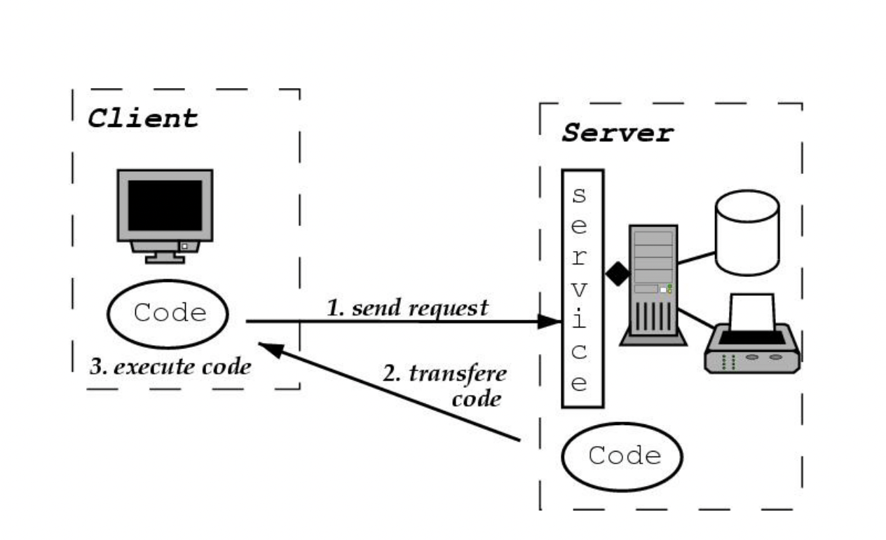

In distributed computing, code on demand (CoD) is any technology that sends executable software code from a server computer to a client computer upon request from the client's software,which is usually the browser.
Unlike traditional paradigms, where code and location are static, Code on Demand offers code mobility, which has the following key advantages: scalability and extensibility.
Despite many advantages, code on demand mobile paradigm due to its nature of implementation, creates security issues.
“In distributed computing, code on demand (COD) is any technology that sends executable software code from a server computer to a client computer upon request from the client's software. ”
The code will be in an inactive state and stay in the server(client) until it is requested by the user(client). Client-server style is the most common architecture in computer network, in which a centralized server responds to the requests coming from the clients. Clients can use their personal computers or any software devices while servers are just more powerful machines located on the network. The bridging gateway between the two is established by the browsers such as Google Chrome, Firefox, Edge, and others.
CoD is considered a type of mobile code paradigm. Figure 1 illustrates that CoD is different from other types such as Client-Server, Remote Evaluation (REV) and Mobile Agent (MA) because it executes code locally, while the others execute the code remotely. Before and After fields represent where the resources and know-how will be before and after execution of the service. Location and resources are the deciding factors when developing a software by using one of the mobile paradigms.
| Paradigm | Before | After | ||
|---|---|---|---|---|
| SA | SB | SA | SB | |
| Client-Server | A | know-how resource B |
A | know-how resource B |
| Remote Evaluation | know-how A |
resource B |
A | know-how resource B |
| Code on Demand | resource A |
know-how B |
resource know-how A |
B |
| Mobile Agent | know-how A |
resource | know-how resource A |
|
REST (Representational State Transfer) is a widely used software architectural that aims at making reliable and stateless Web API, which turn improves web service’s non-functional requirements such as reliability, scalability, portability, and many others. For example, giant firms such as Amazon, Ebay and others scaled their business at scale by adopting REST. Web APIs that follow some or all guiding principles of REST are considered RESTful. These principles are client–server architecture, statelessness, cacheability, uniform interface, using layered system and supporting code on demand. While the first 5 principles listed are constraints of REST, code on demand is considered an optional constraint, because allowing executable code to be run locally may cause security issues.
Figure 2. Code on Demand
Fugetta et.all gives illustration of CoD by giving an example of chocolate cake making. Figure 2. Illustrates the interaction between Louise and Christine. Louise would like to make a cake and has the resources such as oven and ingredients(resources), however she does not have a recipe that she can use. To solve this issue, she contacts Christine, gets the recipe(know-how) and prepares the cake locally at her home.
To illustrate how the code can be executed, the following example uses Ajax to request for a code, which will display the recipe from cake.txt file, which has HTML code in it. Pressing 'the get cake recipe' will display the recipe without the need to refresh the page as this will be handled in the background.
Unlike traditional paradigms, where code and location are static, Code on Demand offers code mobility, which has the following key advantages:
Despite many advantages, code on demand paradigm due to its nature of implementation can raise security issues. Though these issues can vary between technologies, the main problem that all share is that CoD supports execution of arbitrary code and server and the client might not have full visibility or control.
Figure 1. Code Execution in CoD
Figure 2. Snapshot of IlOVEYOU code
One of the famous malicious codes used via mobile codes wasILOVEYOU, which affected millions of computers worldwide
{kind=link}